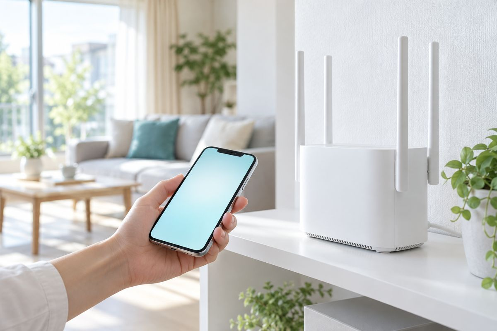

中継機とメッシュWi-Fiのちがいとは？選び方と向いている家の目安

「Wi-Fiが届かない部屋があるから、何か買い足したい。でも中継機とメッシュWi-Fiの違いが分からない」という声はよくあるお悩みです。名前が似ていて、迷う方は少なくありません。
どちらも、ルーター（ネットの電波を出す機器）の電波が届きにくい場所を補う道具です。ただ、仕組みと向いている家が違います。選ぶ前に知っておきたい違いをまとめました。
原因
中継機はルーターの電波を「つなぎ直す」機器
中継機は、ルーターの電波を受け取り、それを再び発信して届く範囲を広げる機器です。コンセントに挿すタイプが多く、比較的手軽に追加できます。
一方で、ルーターと中継機のあいだでも無線で通信するため、条件によっては速度が下がることがあります。置き場所がルーターから遠すぎると、元の電波が弱く、うまく働きません。
メッシュWi-Fiは複数の機器で「一つのネットワーク」を作る
メッシュWi-Fiは、親機と子機（サテライト）を組み合わせ、家全体を網の目のように覆う仕組みです。機器どうしが連携するため、家の中を歩いても、つなぎ先が自動で切り替わりやすいのが特長です。
その分、機器を複数台そろえる必要があり、中継機より費用がかかる傾向があります。対応する機器かどうかも、購入前に確認したい点です。
どちらが合うかは家の広さや間取りで変わる
部屋数が少なく、一か所だけ届かないなら中継機で足りることがあります。3階建てや広い家、壁の多い間取りでは、メッシュWi-Fiが合う場合もあります。ただし、建物の構造や使い方によって結果は変わるため、一概には言えません。
自分で試せる対処法
-
届かない場所と困りごとをメモする
「2階の寝室で動画が止まる」など、場所と症状を書き出します。どこが弱いかが分かると、必要な機器の種類を考えやすくなります。
-
ルーターの置き場所を見直す
ルーターが床や棚の奥、家電の近くにあると、電波が弱まることがあります。家の中心に近く、少し高い場所に動かせるなら試してみてください。電源を抜く場合は、ケーブルの位置を覚えてから行います。
-
ルーターの機種名と接続方式を確認する
ルーター本体のラベルや説明書で、機種名を確認します。中継機やメッシュに対応しているか、メーカーの説明ページで調べられます。分解や設定の初期化は行わないでください。
-
場所を変えて通信速度を測る
ルーターの近くと困っている部屋で、スマホの測定ページを使って比べます。近くでは速いのに離れると遅いなら、電波が届きにくいことが考えられます。
-
買う前に対応機器と返品条件を確認する
ルーターと中継機の相性は、メーカーや規格で異なる場合があります。技適マーク（国の基準に適合した無線機器の印）があることも確認しましょう。
買い足す前に、どこで困っているかと、今のルーターの機種を確かめましょう。
それでも直らないときは
機器の選び方や設置場所に迷う場合は、ご相談ください。Studio33では、世田谷区内のご家庭や事業所に伺い、状況を見ながら一緒に考えます。作業前に内容と料金をお伝えし、ご了承をいただいてから進めます。
| 内容 | 料金（税込） |
|---|---|
| ネット・Wi-Fiの不調診断 | 3,300円〜 |
| 中継機・メッシュWi-Fi設置（機器代別） | 4,400円〜 |
| 端末の追加接続 | 1,100円 |
訪問基本料は3,300円（世田谷区内は出張費込み）です。
ご相談・お見積もりは無料です。